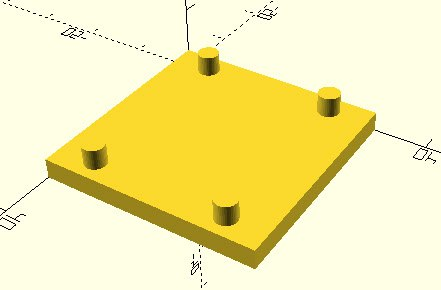
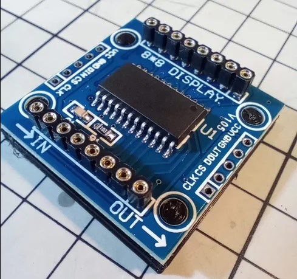

2025-07-26
14:30
#tetris_c #avr
Решения было два - либо “нарисовать” границу физически на экране, либо программно. Второй вариант осложняется тем, что матрицы не позволяют регулировать силу свечения отдельных пикселей.
Идея заключалась в том, чтобы “мигать” пикселями достаточно быстро, чтобы казалось, что они горят в пол силы.
Заход в лоб был - обновлять экран прямо в прерывании. Что, как оказалось, плохая затея. В итоге код “моргания” был перенесен в функцию задержки.
Решение оказалось далеко не идеальным. Сложно подобрать все так, чтобы мерцания видно не было. В некоторых случаях экран моргал так, что, полагаю, можно вызвать эпилепсию. В итоге подобрал более-менее пригодные параметры.
На видео моргания не видно, сниженную яркость не заметно. В живую чуть хуже по морганию и чуть лучше по яркости.
Для sdl2 версии - нарисовал строительную ленту.
https://github.com/bakineugene/tetris_c/commit/48c4542721c49a8258e5aa49973532bee05b6389 https://github.com/bakineugene/tetris_c/commit/205df91dee852af04335cbeeaa191876d8c6f503 Video: videos/tetris_walls_avr.mp4
14:30
Video: videos/tetris_walls_sdl2.mp4
12:58
#openscad #3dprinting
https://github.com/bakineugene/tetris_c/commit/b5255109d299202b57873f7449b959c477de1aba
Расчехлил 3д принтер после длительного простоя. Раньше использовал слайсер https://slic3r.org/, но после смены компьютера растерял все свои настройки (Ender 3 v1). А с дефолтными он печатает очень плохо. Раз уж такое дело - решил попробовать новые слайсеры, Slic3r уже давно не обновлялся. Выбор пал на PrusaSlicer https://www.prusa3d.com/page/prusaslicer_424/ и он из коробки (есть настройки для многих принтеров) печатает гораздо лучше, чем печатало со всеми моими настройками ранее. А также некоторые косяки Slic3r’а поправили.
Для разогрева напечатал примерочную “посадочную площадку” под одну из малых плат max7219

12:58
